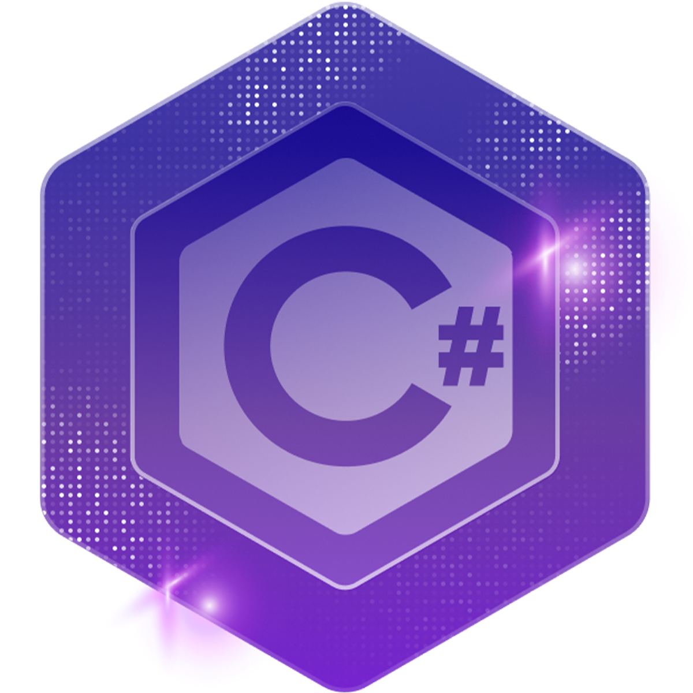
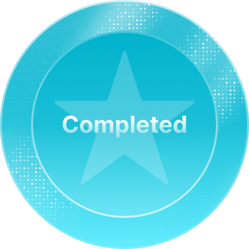

Professional Profile
I am a results-driven systems analyst and software developer with 15+ years’ expertise in automation, industrial system integration, and data-driven solutions for the manufacturing and energy sectors. I am skilled at leading complex projects that bridge IT and OT environments, leveraging advanced software development and data modeling to streamline operations, optimize performance, and reduce costs. I have been recognized for translating process control knowledge into innovative, cost-effective solutions that deliver measurable business value.
Core Technical Skills
VB.NET, C#, C/C++, Python, Fortran
WPF/WCF, Dapper, Docker, GitHub
MS SQL Server, Data Historians (PARCview, Aveva PI)
Windows Server, Office 365
XHQ, Custom Dashboards, Golden Batch Analysis
Professional Experience
Senior Plant Systems Analyst
Capstone Technology, Calgary, Alberta | 2016 – Present
Designed and deployed a Manufacturing Execution System for ethanol production, integrating laboratory test equipment and automating data workflows to cut manual data entry by 60%, improving accuracy and traceability. Delivered real-time operational dashboards for golden batch tracking and recipe optimization, enhancing process efficiency. Led the full technical integration using VB.NET, C#, SQL Server, Docker, PARCview, Python, and WPF, aligning IT and OT systems for seamless performance.
Senior Plant Systems Specialist
Husky Energy Inc., Calgary, Alberta | 2012 – May 2016
Directed multiple technology projects for the Sunrise SAGD facility, delivering four operational systems within aggressive deadlines. Coordinated cross-functional teams of developers, engineers, and site personnel to ensure seamless deployment, meeting all budget targets while exceeding partner expectations. Leveraged OSI PI Historian, SCADA, SQL, and XHQ to enable robust data collection and visualization, enhancing operational decision-making.
Education
- Red River College – Diploma in Mechanical Engineering Technology
Majored in Machine Design and Non-Destructive Testing; minored in Time and Motion Studies - CDI College of Technology and Business – Certified in Software Development and Network Administration
Graduated with Honors
Certifications & Professional Training

Visual Studio .NET C# Masterclass
Masterclass with Tim Corey
📄 View Certificate

Foundations of C languages
Foundations of C with Tim Corey
📄 View Certificate
Legacy of C
Legacy C# with Tim Corey
📄 View Certificate

Microsoft SQL
Microsoft SQL with Tim Corey
📄 View Certificate
Additional Information
- Open to roles in automation, plant systems, industrial software, and integration projects.
- Strong communication skills and effective collaborator with engineering, IT, and field teams.
- Committed to contributing to inclusive and diverse workplaces; eligible for employment equity consideration as a person with a disability.